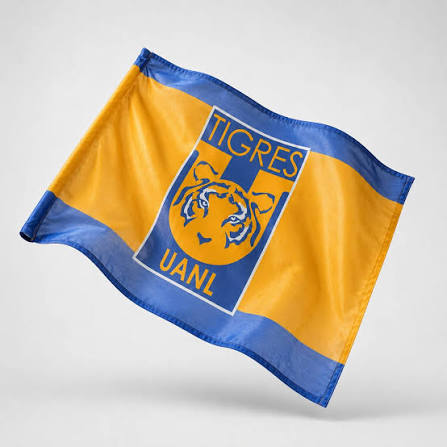

01
Una historia universitaria
Tigres nació oficialmente el 7 de marzo de 1960 y su historia está ligada a la Universidad Autónoma de Nuevo León. Sus colores azul y amarillo representan una identidad que va más allá del marcador. Para mí, hablar de Tigres es hablar de mi equipo favorito y de la emoción de seguirlo.